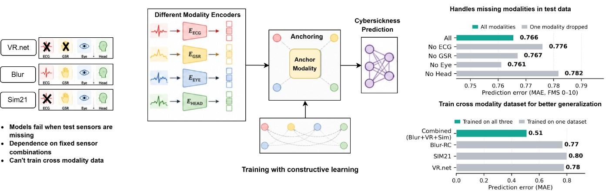

头显配置不同，输入也不同
一种VR体验在实验室能取得眼动、头动、心电和皮肤电，到了另一套设备却可能少掉整个通道。如果模型要求所有输入都齐全，设备差异就会变成使用门槛。这篇研究把传感可用性作为输入的一部分，通过单独编码、表示对齐和掩码融合预测不适评分。对产品团队，吸引力在于不必把缺一条传感流等同于整个分析不可用。不过设备能运行模型与评分能指导体验调整是两件事，部署界面还要说明这次预测实际依据了哪些信号。
Breaking the Modality Barrier · 论文／研究原型

一种VR体验在实验室能取得眼动、头动、心电和皮肤电，到了另一套设备却可能少掉整个通道。如果模型要求所有输入都齐全，设备差异就会变成使用门槛。这篇研究把传感可用性作为输入的一部分，通过单独编码、表示对齐和掩码融合预测不适评分。对产品团队，吸引力在于不必把缺一条传感流等同于整个分析不可用。不过设备能运行模型与评分能指导体验调整是两件事，部署界面还要说明这次预测实际依据了哪些信号。
网络让注意力跳过缺席的模态，而不是编造一份补齐的数据。研究处理的是整路信号不可用，不覆盖某些时刻突然丢帧或传感器持续输出坏值；从未在训练中出现的模态也没有通用即插即用能力。这些区别会影响产品状态设计。未授权采集、硬件不存在、暂时断线和已采集但质量差，不宜都显示为零值。零可以被误解为没有不适，缺失则表示没有这部分证据。保持这几种状态可区分，比让所有设备界面看起来完全相同更有用。
作者比较三个已有数据集，在统一时间处理后用窗口进行预测；不同数据集的评分范围也经过映射。约一半窗口的不适标签为零，较严重的情况较少，这会限制对高风险片段的判断。论文没有做实时系统延迟验证，因此不能把它写成佩戴即用的预警功能。训练数据的不同量表被缩放到相近数值，也不意味着人们对不适的表达完全等价。真正用于体验控制时，需要先理解错误预测会在什么时候发生，而不是只报告平均误差。
预测之后可以考虑提示休息、降低移动速度或让用户自己决定是否继续，但这些是潜在设计，不是论文已经验证的结果。自动暂停可能打断合作任务，误报过多也可能让人忽略提示。一个较稳妥的交互方向是保留用户控制，说明当前证据和可选动作，同时让退出容易。模型的模块化输入使跨设备探索更方便，仍需要分别验证设备、内容和人群。它支持的是对缺失传感条件下预测的研究，不能据此宣称预防晕动、诊断健康状态或替代个人感受。